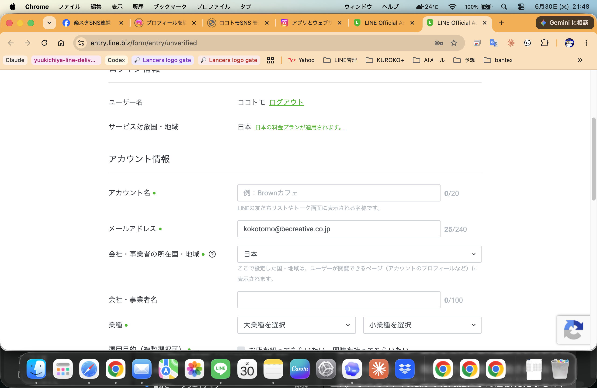
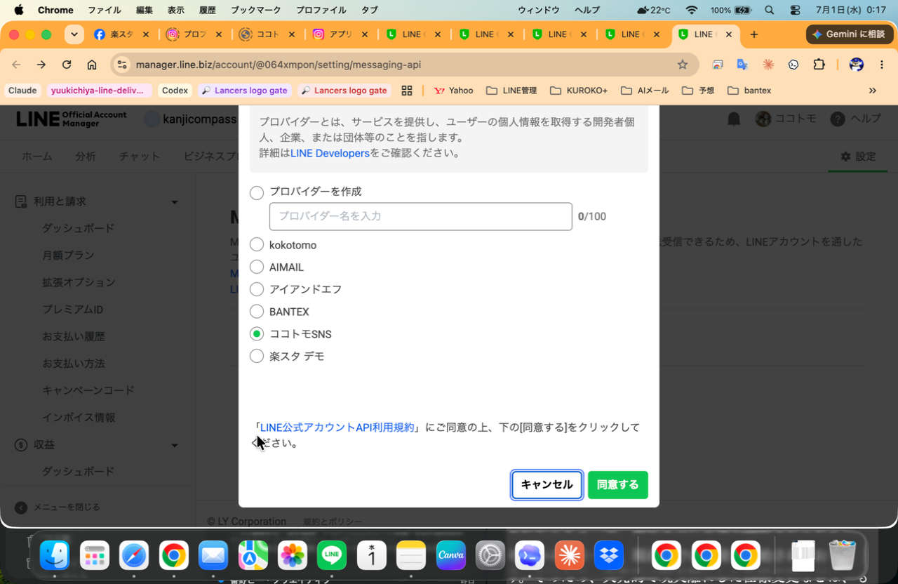
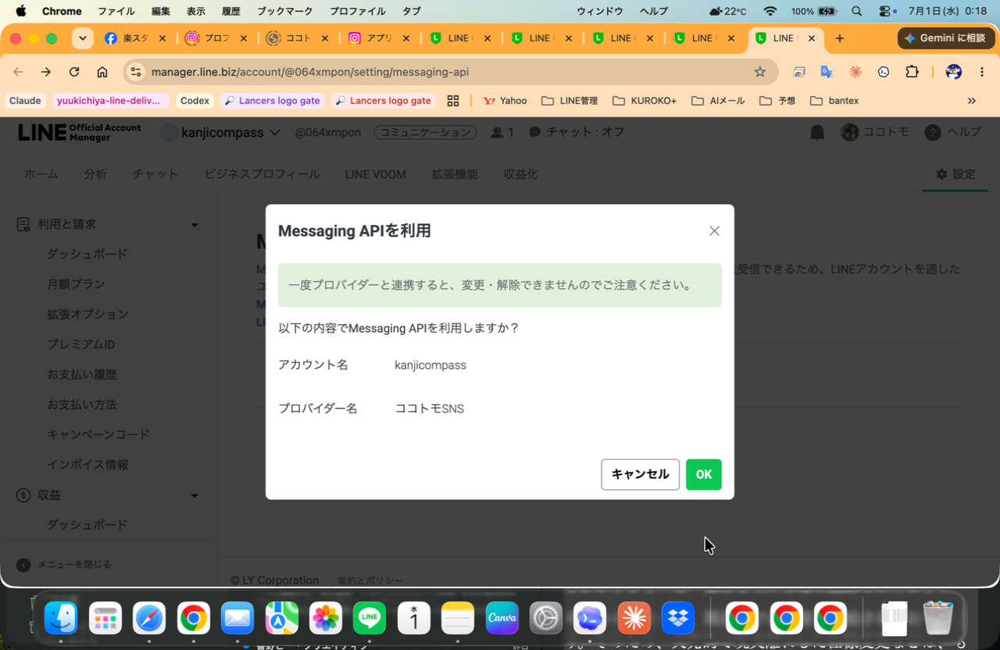
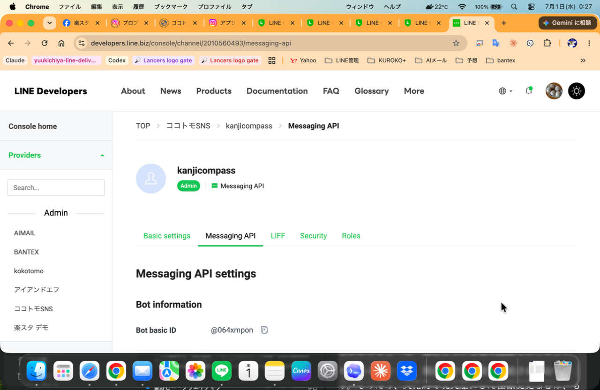
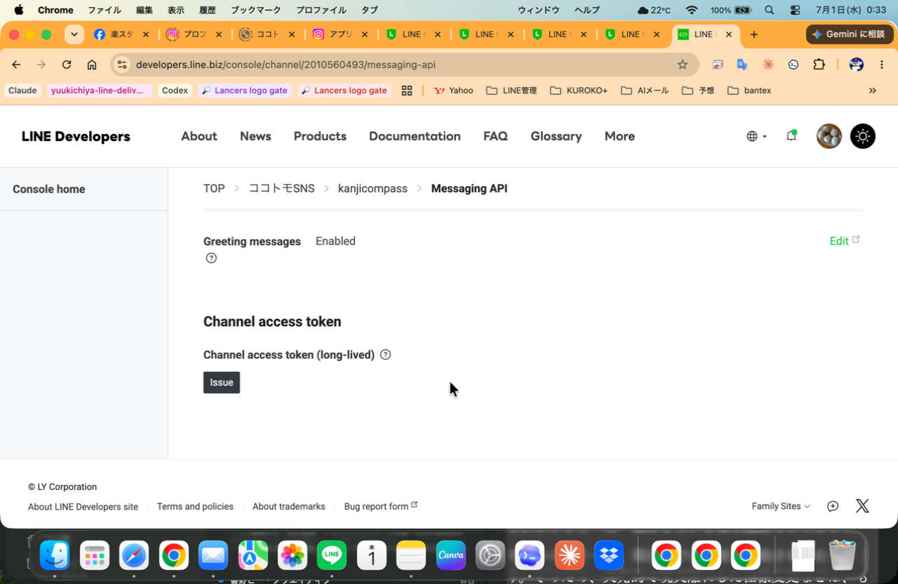
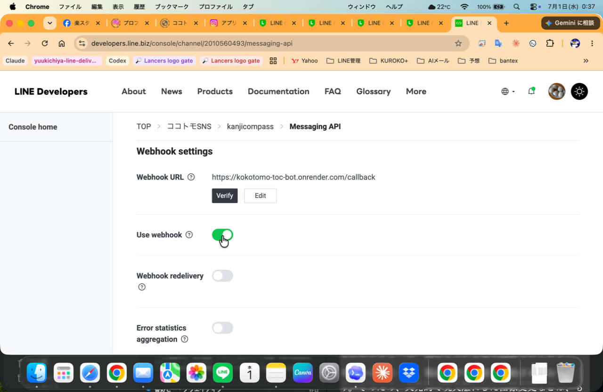
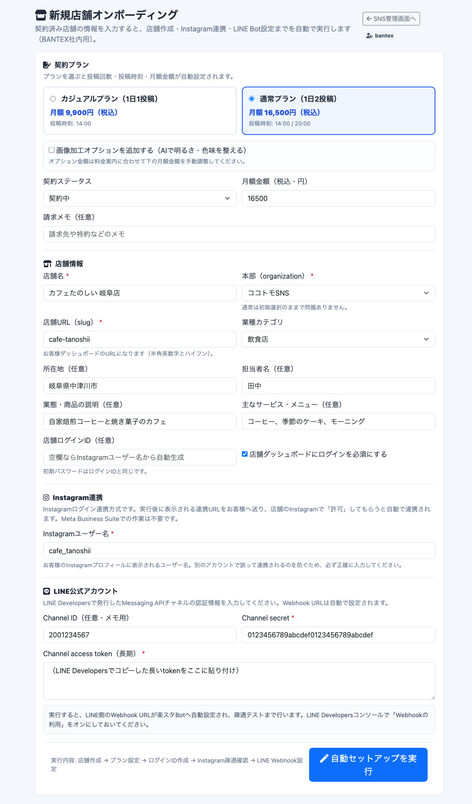
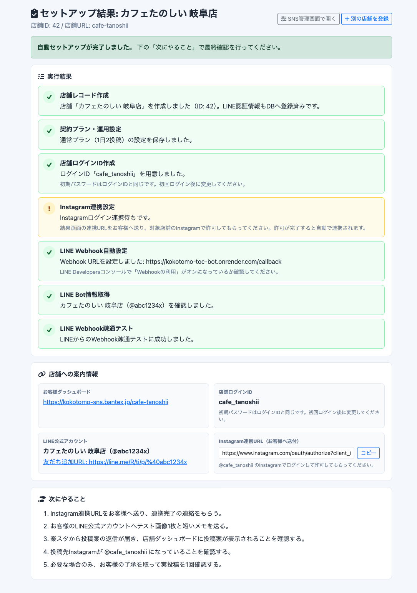
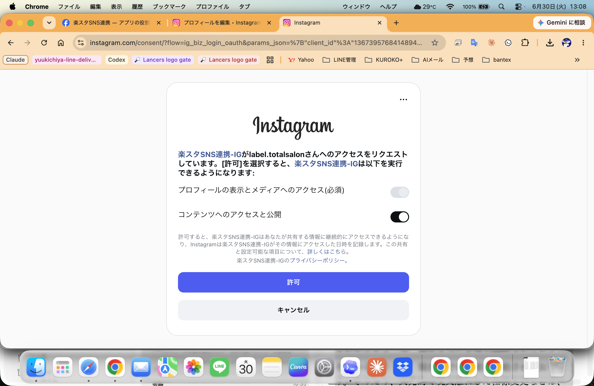
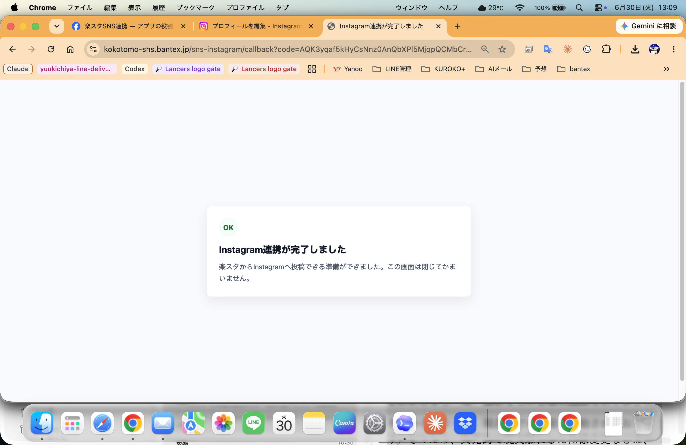

新規店舗オンボーディング 完全マニュアル
2026-07-03版。初めての人向けに、お客様のInstagram確認からLINE Bot作成、楽スタへの登録、開通テストまでを全部まとめています。
全体の流れ（この順番でやれば終わります）
アカウントがあるか、プロアカウントになっているかを確認します。なければ作ってもらいます。→ STEP1
ここだけ手作業です。作成後に
Channel secret と Channel access token の2つをコピーします。→ STEP2契約プラン、店舗情報、Instagramユーザー名、LINEの2つの値を入力します。→ STEP3
残りの設定は全部自動です。結果画面で緑のチェックを確認します。→ STEP4
①Instagram連携URL（開いて許可を押してもらう）②LINE友だち追加URL ③店舗ダッシュボードURLとログインID。→ STEP5
LINEに写真1枚とメモを送って、投稿案が返ってくることを確認します。→ STEP6
始める前に用意するもの
| 用意するもの | だれが用意する | メモ |
|---|---|---|
| お客様のInstagram（プロアカウント） | お客様 | なければSTEP1の手順で作ってもらう。パスワードは預からない。 |
| お客様用のLINE公式アカウント | BANTEX（またはお客様と一緒に） | STEP2で作成。既にLINE公式アカウントがある店舗はMessaging API有効化から。 |
| 契約内容（プランと開始日） | BANTEX | カジュアル（1日1投稿・月額9,900円税込）か通常（1日2投稿・月額16,500円税込）か。画像加工オプションの有無。 |
| 楽スタ管理画面のログイン | BANTEX | https://kokotomo-sns.bantex.jp/login に運営側アカウントでログインできること。 |
STEP1: お客様のInstagramを確認する
確認することは2つだけ。「アカウントがあるか」「プロアカウントになっているか」です。
1-1. そもそもInstagramアカウントがない場合
お客様に以下の公式手順でアカウントを作ってもらいます。スマホにInstagramアプリを入れて、店舗のメールアドレスか電話番号で登録します。
- 公式ヘルプ: Instagramアカウントを作成する（Instagramヘルプセンター）
- ユーザー名は店舗名がわかるものにしてもらいます（例:
cafe_tanoshii）。あとで楽スタに登録するのでメモしておきます。
1-2. プロアカウントかどうかを確認する方法
お客様のスマホでInstagramの自分のプロフィール画面を開いてもらい、次のどちらかが見えればプロアカウントです。
- プロフィールに「プロフェッショナルダッシュボード」というボタンがある
- カテゴリ表示（「カフェ」「美容室」など）が名前の下に出ている
1-3. プロアカウントになっていない場合（切り替えてもらう）
切り替えは無料で、お客様のスマホで1〜2分で終わります。
STEP2: お客様用のLINE公式アカウント（Bot）を作る
全工程で唯一の手作業パートです。実例スクショ（kanjicompass）付きで順番に進めます。ゴールは「Channel secret と Channel access token の2つをコピーした状態」です。
2-1. LINE公式アカウントを作成する
- 作成ページ: LINE公式アカウントの開設（LINEヤフー for Business）
- アカウント名は店舗のInstagram名に寄せるとあとで管理しやすいです（例:
カフェたのしい 岐阜店）。

2-2. Messaging API（Bot機能）を有効にする
LINE Official Account Manager にログインし、作ったアカウントの 設定 → Messaging API を開いて、緑の「Messaging APIを利用する」ボタンを押します。

ココトモSNS を選びます。新しいプロバイダーは作りません。
2-3. LINE Developersでチャネルを開き、2つの値をコピーする
LINE Developersコンソール を開くと、ココトモSNS プロバイダーの中に今作ったアカウントのチャネルができています。

| コピーするもの | どこにあるか | 見た目 |
|---|---|---|
| Channel secret | 「チャネル基本設定（Basic settings）」タブの中 | 32桁の英数字 |
| Channel access token（長期） | 「Messaging API設定」タブの一番下。「発行（Issue）」ボタンを押すと表示されます | とても長い文字列 |

2-4. 「Webhookの利用」をONにする
同じ「Messaging API設定」タブで Webhookの利用（Use webhook） をONにします。

https://kokotomo-toc-bot.onrender.com/callback を自動で設定します。STEP3: 楽スタのオンボーディング画面に入力する
ここからは1画面で終わります。https://kokotomo-sns.bantex.jp/login に運営側アカウントでログイン → SNS管理画面 → 右上の「新規店舗オンボーディング」ボタンを押します（直接URLは /sns-admin/onboarding）。

各欄になにを入れるか
| 欄 | 入れるもの | 例 |
|---|---|---|
| 契約プラン | 契約したプランのカードをクリック。投稿時刻と月額は自動で入ります | 通常プラン（1日2投稿） |
| 画像加工オプション | 契約している場合だけチェック。月額金額は料金案内に合わせて手で直します | チェックなし |
| 契約ステータス | 通常は「契約中」。お試し期間なら「テスト」 | 契約中 |
| 店舗名 | 契約書どおりの店舗名 | カフェたのしい 岐阜店 |
| 本部（organization） | 触らなくてOK（初期選択のまま） | ココトモSNS |
| 店舗URL（slug） | お客様ページのURLになる半角英数字。短くわかりやすく | cafe-tanoshii |
| 業種カテゴリ | 近いものを選ぶ | 飲食店 |
| 所在地・担当者・業態・サービス | 任意。書くほどAIの投稿文が良くなるので、わかる範囲で埋める | 岐阜県中津川市 / 田中 / 自家焙煎コーヒーのカフェ |
| 店舗ログインID | 空欄でOK（Instagramユーザー名から自動で作られます） | （空欄） |
| Instagramユーザー名 | お客様のInstagramのユーザー名。@は付けない。1文字も間違えないこと | cafe_tanoshii |
| LINE Channel ID | 任意（メモ用）。LINE Developersのチャネル画面に表示されている数字 | 2001234567 |
| LINE Channel secret | STEP2-3でコピーした32桁の英数字を貼り付け | 0123...cdef |
| LINE Channel access token | STEP2-3で発行した長い文字列を貼り付け | （長い文字列） |
STEP4: 「自動セットアップを実行」を押して結果を見る
ボタンを押すと最大1分ほどで結果画面が出ます。裏では「店舗作成 → 契約設定 → ログインID発行 → Instagram連携準備 → LINEのWebhook自動設定と疎通テスト」が順番に実行されています。

印の見方
| 印 | 意味 | やること |
|---|---|---|
| ✓ 緑 | 成功 | 何もしなくてOK |
| ! 黄 | 待ち・注意 | 表示された案内に従う。「Instagramログイン連携待ち」は正常です（STEP5でお客様に許可してもらうと完了） |
| × 赤 | 失敗 | 表示された原因を直す。店舗の登録自体は残っているので、SNS管理画面から続きを設定すればOK。最初からやり直す必要はありません |
STEP5: お客様に3つを案内する
結果画面の「店舗への案内情報」に全部表示されています。そのままお客様に伝えます。
5-1. Instagram連携URL（一番大事）


5-2. LINE友だち追加URL
結果画面に表示される友だち追加URL（https://line.me/R/ti/p/@...）をお客様に送り、店舗のスマホで友だち追加してもらいます。このLINEが「写真を送ると投稿してくれる窓口」になります。
5-3. 店舗ダッシュボードURLとログインID
お客様が投稿予定や投稿履歴を見るページです。結果画面の「お客様ダッシュボード」URLと「店舗ログインID」を伝えます。初期パスワードはログインIDと同じなので、初回ログイン後に変更してもらいます。
STEP6: 開通テスト
よくある質問
Q. Meta Business Suiteの作業は自動でやってくれるの？
A. 自動化ではなく、そもそも不要になりました。以前のやり方（Facebookページを作ってMeta Business Suiteの「楽スタ管理」に資産追加する方式）は煩雑なため、新規店舗では使いません。Instagramログイン連携方式では、お客様が連携URLを開いて「許可」を押した瞬間に、必要な接続情報（token）が楽スタへ自動保存されます。
Q. Facebookページを既に持っている店舗はどうする？
A. 持っていても関係なく、新規店舗はこのマニュアルどおりInstagramログイン連携で進めます。Facebookページ側の設定は触りません。
Q. 昔のやり方で動いている既存店舗はどうなる？
A. そのまま動き続けます。既存店舗の設定変更はSNS管理画面から行い、このオンボーディング画面は新規店舗専用です。既存店舗の旧方式設定を外したり作り直したりしません。
Q. LINE公式アカウントを既に持っている店舗は？
A. STEP2-1（アカウント作成）を飛ばして、STEP2-2のMessaging API有効化から進めればOKです。
Q. お客様のInstagramのパスワードを預かってもいい？
A. 預かりません。連携URLの「許可」もパスワード入力も、必ずお客様本人に操作してもらいます。
困ったとき
| 症状 | 原因と対処 |
|---|---|
| 「店舗URL（slug）は既に使われています」と出る | 他店舗と重複しています。別の英数字に変えて再実行します。 |
| 「LINE Webhook自動設定」が赤になる | ほぼChannel access tokenの貼り間違い（前後の空白、途中欠け）です。LINE Developersでコピーし直し、SNS管理画面の該当店舗に貼り直します。 |
| 「LINE Webhook疎通テスト」が黄色になる | 慌てなくてOK。STEP6の実テスト（写真送信）で動けば問題ありません。動かない場合はLINE Developersの「Webhookの利用」がONか確認します。 |
| お客様が許可を押したのに「別のアカウントでログインされています」と出る | 入力したInstagramユーザー名と、お客様がログイン中のアカウントが違います。ユーザー名の綴りを確認し、お客様に店舗アカウントでログインし直してもらいます。 |
| お客様の許可画面で「開発者の役割が不十分」などのエラーが出る | App Review完了前のテスター承認漏れです。テスター招待の承認手順を先に済ませます。 |
| LINEに写真を送っても返信がない | ①友だち追加したアカウントが正しいか ②「Webhookの利用」がONか ③LINE Official Account Managerの応答設定で「チャット」がオフ（Bot利用）になっているか、の順に確認します。 |
| オンボーディングのボタンが管理画面に見当たらない | ダッシュボードがまだ旧バージョンです。BANTEX開発担当（番野さん）に連絡してください。 |